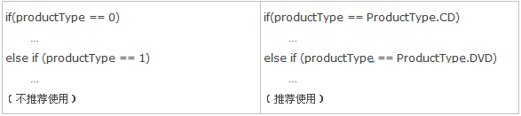

Linux下建议的命名规则如下。
（1）变量名必须有一定的意义，并且意义准确。例如有一个变量用于保存图书的数目，可以命名为number_of_book或者num_of_book。不建议使用i，因为它没有意义。也不建议使用number或book，因为意义不准确。
（2）不建议大小写混用。如定义一个计数变量，int nCount；这在Windows中是一个很好的变量名，其中nCount的首字母n用来说明这个变量的类型是int。但在Linux下不建议大小写混合使用，一般标识符只由小写字母，数字和下划线构成。
（3）在失去意义的情况下，尽量使用较短的变量名。例如有一个变量，用于暂时存储一个计数值，把变量命名为tmp_count显然要比this_is_a_temperary_counter好。
（4）不采用匈牙利命名法表示变量的类型。如int nCount；n用于说明变量的类型，在Linux中不建议这样命名变量。
（5）函数名应该以动词开头，因为函数是一组具有特定功能的语句块。比如一个函数，它用于取得外部输入的数值，则可以命名为get_input_number。
（6）尽量避免使用全局变量。
1、避免使用不易理解的数字，用有意义的标识来替代（枚举和常量）
比如：

2、在界面层中尽量使用异常处理try语句，不要将系统级别的错误直接暴露给用户，而更应该的是把系统抛出的错误信息记录到LOG日志文件中去，告诉用户友好的提示信息
下面了解一下华为内部的编程规范